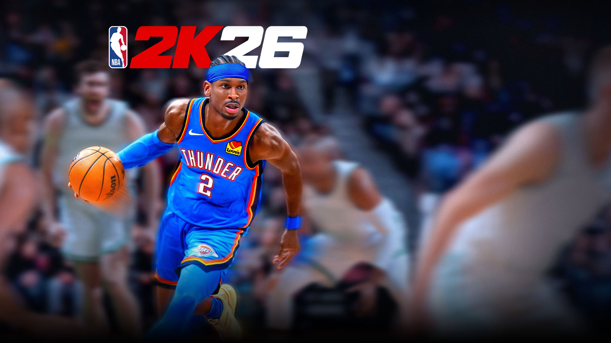

Ano de criação: 2025
País de origem: Estados Unidos
Desenvolvedores: Visual Concepts
Descrição: NBA 2K26 é um jogo de simulação de basquete que faz parte da famosa franquia NBA 2K. O jogo busca reproduzir de forma realista a experiência da liga profissional de basquete, com gráficos avançados, jogabilidade aprimorada e diversos modos de jogo. Os jogadores podem controlar atletas reais, competir em partidas e evoluir seus personagens.
